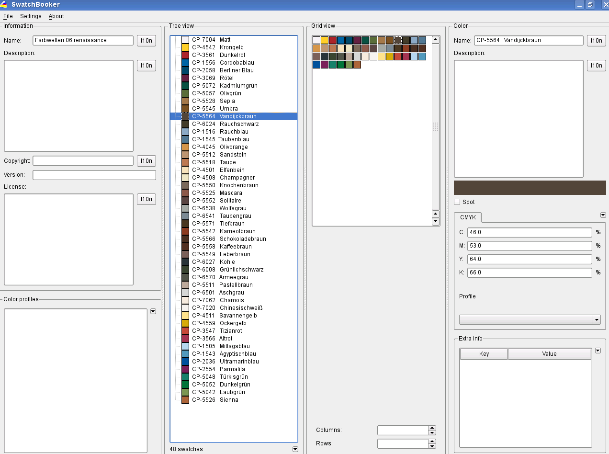

Le vecchie abitudini sono dure a morire, e molti grafici si basano su raccolte di colori commerciali come quelle prodotte da Pantone®, HKS®, Toyo®, o altre, e specialmente quelle fornite insieme all'applicazione di disegno o progettazione che usano abitualmente da anni o decenni.
Il team di Scribus è riuscito ad ottenere le licenze d'uso di molte raccolte di colori, ma non tutti gli sforzi in questa direzione hanno avuto (ancora) successo, il che significa che potreste dover ottenere da altre fonti le raccolte colore che vi servono. Il team di Scribus è informato dell'esistenza di raccolte di terzi che contengono questi colori e che utilizzano il formato di Scribus, ma non può approvarne l'uso, poiché la loro legalità è discutibile quanto la loro affidabilità.
Finché i problemi di licenza con Scribus non saranno risolti, e purché abbiate una licenza valida per un programma come CorelDraw, PageMaker o InDesign, dovreste essere liberi di usare le relative raccolte di colori in Scribus, anche se Scribus non è ancora in grado di utilizzare molti formati proprietari di raccolte di colori. È questa la situazione in cui SwatchBooker diviene uno strumento essenziale. Con SwatchBooker non solo potete convertire le raccolte di colori, siano esse proprietarie od open source, per l'uso con Scribus; potete anche modificare le raccolte esistenti cambiando i valori di colore, assegnando profili colore o traducendo i nomi dei colori.
Se usate SwatchBooker per scopi diversi dalla conversione di raccolte di colori, lo fate a vostro rischio e pericolo. Cambiare i nomi dei colori spot o i loro valori alternativi L*a*b/CMYK/RGB può causare errate corrispondenze di colore, e va contro lo scopo specifico per cui esistono insiemi standardizzati di colori.
|  |
Requisiti:
Python, PyQt4, littleCMS
Formati gestibili:
Importazione: Adobe (ACO, ACB, ACT, ASE, ACF, BCF, CLR); AutoCAD (ACB; solo senza crittografia!); ColorSchemer (CS); Corel (CPL); GIMP (GPL); profili colore ICC denominati; OpenOffice.org (SOC); QuarkXPress (QCL+CUI; sono necessari entrambi i file per poter convertire una libreria colore di XPress); RAL Digital/Digital Colour Atlas (BCS); RIFF (PAL); Scribus (XML); VivaDesigner (XML)
Esportazione: Adobe Swatch Exchange (ASE); GIMP (GPL); HTML; SwatchBooker (SBZ), OpenOffice.org/LibreOffice (SOC); Scribus (XML)